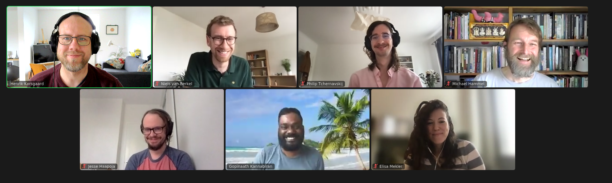

This will just be a gist of the conversation. I don't want to go too much into detail and/or report statements made by the participants. If you participated and you feel that I've missed something or this note is a misrepresentation of what happened, then reach out and we can make the appropriate edits.
Thank you all who participated -- it was a very lively and exciting conversation!
As this was the first, I/we are still finding out the format and how to ensure everyone are part of the conversation.
For the introductions, we did a round where everyone contributed with a few notes on their motivation for and interest in theory. This introduction proved enough material for the entire conversations and several of the points from the introduction recurred later.
Throughout the discussion a few good points were on why we should look at theory and theorization in HCI. It was noted that the growing body of HCI publications made it more difficult to get an overview, and that there are some examples of repetition and old wine on new bottles (or technologies in this case). One interesting argument that was repeated by a few participants was developing HCI theory as a sort of "long term memory" for the community.
Several points were made related to theory and practice, e.g. expectations from students when teaching HCI on the theories of the field. This poses an interesting dynamics when promoting theory -- at some point it should be teachable too. There is an open question here: Are there any discussions of theory in HCI textbooks? Do we present constructs as "theory" or are they a combination of methods, frameworks, concepts etc.?
We also touched upon the habit of importing theories from other fields. This can be a sensitive subject, but the discussion raised two interesting points: first, when we import theory, do we pay attention to the discussions and theorization work that has gone into it or do we import it as a "product"? Second, how do we go about dealing with theorize imported from other areas when they turn out to be outdated or when we forget to follow the home-fields ongoing improvements (or rejections)?
This includes perhaps myths about the strength, generalizable, coherence and applicability of theory introduced when we import theory and the criteria for the expectations and assessment of theory from other fields. One open suggestion is to look at how other areas theorize over importing the resulting theory.
A focus on theorization and the process was discussed multiple times from multiple perspectives. It seemed like all the participants had a strong interest in theorization (over theory) and we discussed multiple good points. One participants asked if "HCI was doing hermeneutics?" (as opposed to theory) with a few interesting follow ups, e.g. does it matter and perhaps we can develop theory from hermeneutics?
A second important point discussed here is involving others in theorization. Here I will allow myself to cite a participant verbatim: "As long as it is theorization it is a process, and we should include the reader in that process!" This was extended in the conversation to involve students, practitioners, participants in our work and the community (as a collective) in theorization.
At two points did we discuss gaps to bridge. First, and from the perspective of game design, there seem to be a strong awareness of theory from psychology among game designers, but less awareness of HCI frameworks relevant to game design. Second, related to teaching theory and involving students in theorization. There seem to be a potential in discussing how to engage with whatever canonical/consensus ideas that are in HCI as theory with and for students (and other external collaborators).
(I'm saying this with love) Whenever we discuss theory and developing theory, it become somewhat a therapeutic session on the current publication climate and formats in HCI. We do share the experience that it can be difficult to put write and publish theory work, and several discussed differences between CHI and then CSCW and NordiCHI (as examples). One important point was that recent analysis and discussions of conceptual contributions in HCI, e.g. by Oulasvirta and Hornbæk (2016), have put some focus on the area and can be used as an argument for accepting more conceptual contributions (as more than a add-on to a empirical or constructive contribution).
One suggestion was to just do it. Start publishing ideas and theoretical work elsewhere as initial steps to get it out there. Sometimes the thinking cannot wait for or does not benefit from reviewing.
I have likely forgotten a few important points and gotten some wrong. Please reach out if there is something I need to add or have worded differently. Here are my personal summary of the conversations:
Thank you all who participated -- it was a very lively and exciting conversation!
Oulasvirta, A., & Hornbæk, K. (2016, May). Hci research as problem-solving. In Proceedings of the 2016 CHI Conference on Human Factors in Computing Systems (pp. 4956-4967).
Kostakos, V. (2015). The big hole in HCI research. Interactions, 22(2), 48-51.
Liu, Y., Goncalves, J., Ferreira, D., Xiao, B., Hosio, S., & Kostakos, V. (2014, April). CHI 1994-2013: Mapping two decades of intellectual progress through co-word analysis. In Proceedings of the SIGCHI conference on human factors in computing systems (pp. 3553-3562).
Star, S. L. (1996). Working together: Symbolic interactionism, activity theory, and information systems.
Deutsch, D. (2013). Constructor theory. Synthese, 190(18), 4331-4359.